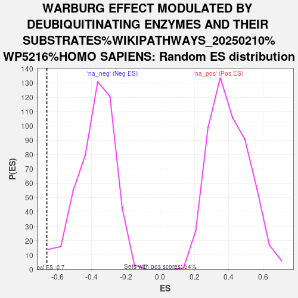

| | | Dataset | GFPPositive_GFPNegative |
| Phenotype | NoPhenotypeAvailable |
| Upregulated in class | na_neg |
| GeneSet | WARBURG EFFECT MODULATED BY DEUBIQUITINATING ENZYMES AND THEIR SUBSTRATES%WIKIPATHWAYS_20250210%WP5216%HOMO SAPIENS |
| Enrichment Score (ES) | -0.66256946 |
| Normalized Enrichment Score (NES) | -1.7459882 |
| Nominal p-value | 0.0064794817 |
| FDR q-value | 0.39252183 |
| FWER p-Value | 1.0 |
Table: GSEA Results Summary
 Fig 1: Enrichment plot: WARBURG EFFECT MODULATED BY DEUBIQUITINATING ENZYMES AND THEIR SUBSTRATES%WIKIPATHWAYS_20250210%WP5216%HOMO SAPIENS
Fig 1: Enrichment plot: WARBURG EFFECT MODULATED BY DEUBIQUITINATING ENZYMES AND THEIR SUBSTRATES%WIKIPATHWAYS_20250210%WP5216%HOMO SAPIENS
Profile of the Running ES Score & Positions of GeneSet Members on the Rank Ordered List
| SYMBOL | RANK IN GENE LIST | RANK METRIC SCORE | RUNNING ES | CORE ENRICHMENT | | 1 | PGAM1 | 4164 | 0.325 | -0.1913 | No |
| 2 | FOXO1 | 6077 | 0.148 | -0.2792 | No |
| 3 | U2AF2 | 7264 | 0.070 | -0.3357 | No |
| 4 | USP37 | 8251 | 0.014 | -0.3867 | No |
| 5 | MYC | 9762 | -0.064 | -0.4610 | No |
| 6 | OTUB2 | 9810 | -0.067 | -0.4573 | No |
| 7 | USP28 | 10258 | -0.092 | -0.4726 | No |
| 8 | SIRT7 | 11425 | -0.162 | -0.5196 | No |
| 9 | MTOR | 11505 | -0.167 | -0.5085 | No |
| 10 | OTUD7B | 11708 | -0.180 | -0.5027 | No |
| 11 | HIF1A | 14178 | -0.385 | -0.5985 | No |
| 12 | VHL | 14508 | -0.421 | -0.5774 | No |
| 13 | USP19 | 16114 | -0.644 | -0.6037 | Yes |
| 14 | OTUD6B | 17130 | -0.857 | -0.5791 | Yes |
| 15 | VEGFA | 17355 | -0.926 | -0.5063 | Yes |
| 16 | HK2 | 18138 | -1.323 | -0.4266 | Yes |
| 17 | KDR | 18471 | -1.718 | -0.2869 | Yes |
| 18 | USP44 | 18821 | -3.361 | 0.0022 | Yes |
Table: GSEA details [plain text format]

Fig 2: WARBURG EFFECT MODULATED BY DEUBIQUITINATING ENZYMES AND THEIR SUBSTRATES%WIKIPATHWAYS_20250210%WP5216%HOMO SAPIENS: Random ES distribution
Gene set null distribution of ES for WARBURG EFFECT MODULATED BY DEUBIQUITINATING ENZYMES AND THEIR SUBSTRATES%WIKIPATHWAYS_20250210%WP5216%HOMO SAPIENS